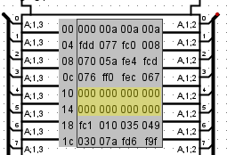

This format looks a lot like v2.0 raw
Data words are presented in hexadecimal and separated by a space character. This one is important for the correct alignment of the data.
v3.0 hex words addressed 000 00a 00a 00a fdd 077 fc0 008 070 05a fe4 fcd 076 ff0 fec 067 002 f85 f8b ffe 021 016 f9e fc6Memory of 24 words of 12 bits
The line returns of his not interpreted. With the exception of spaces and the first line, there are no layout rules.
You can place comments in the file using the '#' symbol. All characters in the line starting from the '#' symbol will be ignored by Logisim. A double space will have the same effect.
There is no need to specify the 0x prefix before the data, however if they exist they will simply be ignored.
If the words in the file are larger than the words in memory, the most significant bits will be ignored.
If the length of the file data set is shorter than the memory space the remaining cells will be initialized to 0 and for RAM according to the parameters in Project options, to 0 or randomly.
v3.0 hex words addressed
This format is identical to the previous one with the same characteristics. In addition, an indication of the address at the beginning of the lines. The address is given in hexadecimal followed by the character :
v3.0 hex words addressed 00: 000 00a 00a 00a fdd 077 fc0 008 08: 070 05a fe4 fcd 076 ff0 fec 067 18: fc1 010 035 049 030 07a fd6 f9fMemory of 32 words of 12 bits
In this example the 8 words at address 0x10 are not specified. These cells will be initialized to 0 and for RAM according to the parameters in Project options, to 0 or randomly.

Next: Pop-up menus and files.